result = lm(y~X) # append another intercept
result = lm(y~X+0) # "+0" implies no interceptLecture: Modelling and Shrinkage techniques
Actuarial Data Science - Open Learning Resource
Recommended Reading
- Pre-requisite reading from An Introduction to Statistical Learning with Applications in R (ISLR): Chapters 2–7, 10
- The Elements of Statistical Learning (ESL): Chapter 4.4.4
Learning Objectives
- Justify the importance of understanding of the business context when designing and implementing a data analytics project
- Explain domain knowledge and discuss how it is used to interpret data and make feature selection
- Explain the key iterative steps involved in building a model
- Distinguish between different types of statistical machine learning, including regression and classification problems
- Explain the iterative process of defining an appropriate target response variable in predictive modelling
- Perform feature selection and transformation
- Explain the purpose of dimension reduction and compare the advantages and disadvantages of different dimension reduction techniques
Learning Objectives (continued)
- Explain and perform common techniques for splitting data into training, validation, and test sets
- Understand shrinkage techniques
- Apply shrinkage techniques in predictive modelling
In this lecture, we step back and examine the overall modelling landscape: what it means to build a model, how different statistical learning methods relate to one another, and why we sometimes deliberately penalise model complexity (shrinkage) to improve performance. The goal is to provide a conceptual map so that later techniques, such as GLMs, random forests, and boosting, fit into a coherent framework rather than appearing as isolated methods.
Statistical Machine Learning
Machine Learning vs. Statistics
- Machine Learning focuses on the design and development of algorithms that allow computers (machines) to improve their performance over time based on data.
- Statistics classically often requires or assumes knowledge of the data-generating process (modelling), including the probability distribution from which the data are drawn.
- The distinction between statistics and machine learning has blurred over the past few decades
- Actuarial data analytics benefit from both areas
Different Types of Learning
- Supervised Learning
- Given pairs of input data (predictors) and targets (labels)
- Learn a mapping from inputs to targets (training)
- Goal: use the learned mapping to predict targets for new input data
- Includes regression and classification
- Unsupervised Learning
- Only input data are given x_i, i = 1, \ldots, n, with no responses (targets/labels) y_i
- Goal: understand relationships between variables –
- Often used for data exploration (e.g. cluster analysis)
Different Types of Learning (continued)
- Semi-supervised Learning
- Labelling data can be expensive or difficult
- Some observations have associated responses, while others do not
- Reinforcement Learning
- Agents learn to maximise rewards through interaction with an environment
- e.g. used in AlphaGo
The 5 Core Activities of Data Analysis
- Stating and refining the question
- Exploring the data
- Building formal statistical models
- Interpreting the results
- Communicating the results
The Iterative Modelling Process
- Business understanding
- Data understanding and preparation
- Modelling
- Evaluation
- Communication
- Deployment
- Application of a model to make predictions on new data
- e.g. generating reports or implementing a repeatable data science process
Defining Your Target Variable
- Use business and domain knowledge
- Think carefully about the question
- Follow the iterative data analysis process to refine it
- Multiple options may be possible — which one is most appropriate?
Modelling Example: Polynomial Curve Fitting
- We simulate artificial training data from the function \sin(2\pi x) + \text{Gaussian random noise}, \quad x \in [0,1]
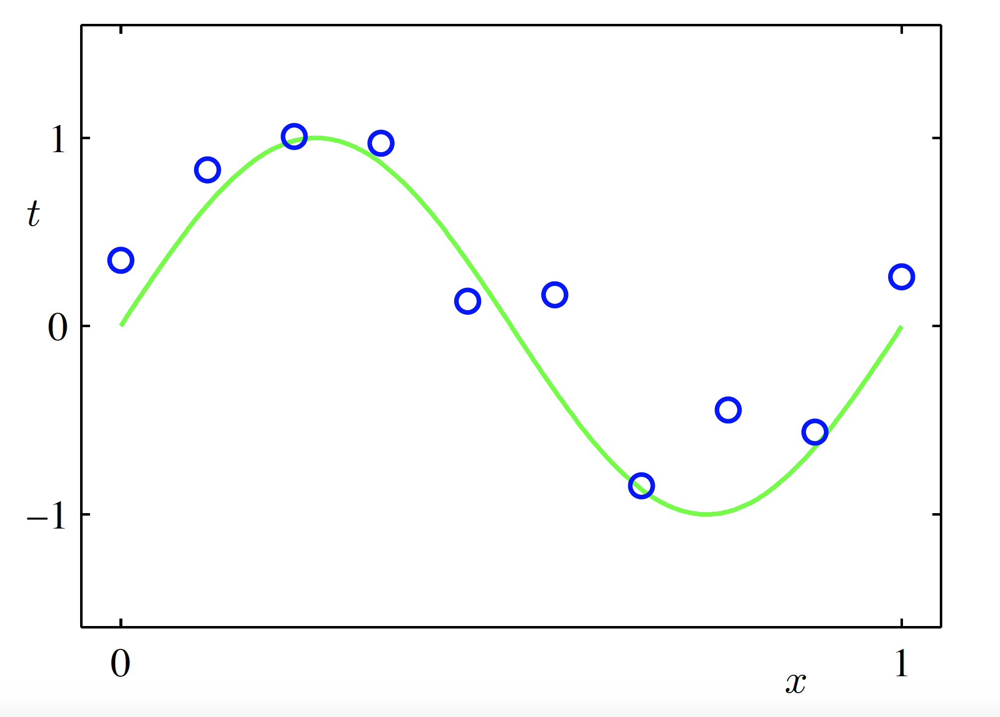
Training Data
- Sample size: N = 10
- Input variable (predictor): x \equiv (x_1, \ldots, x_N)^T
- Target variable (response): y \equiv (y_1, \ldots, y_N)^T
- x is generated by choosing x_n (n = 1, \ldots, N) uniformly from [0,1] (R code:
runif())
- y is generated by \sin(2\pi x) + \text{Gaussian random noise} (R code:
sin(),rnorm())
- Goal: predict the target value \hat{y} for a new input \hat{x} (i.e. achieve good generalisation)
Model Specification
- Polynomial Regression
f(x, \bm{w}) = w_0 + w_1 x + \cdots + w_M x^M = \sum_{j=0}^{M} w_j x^j
- M is the order of the polynomial
- f(x, \bm{w}) is a nonlinear function of x
- f(x, \bm{w}) is a linear function of the parameters \bm{w}
- How can we find suitable parameters \bm{w} = (w_0, w_1, \ldots, w_M)^T?
Performance Measure
- Minimise an error function, such as the sum of squared errors \mathrm{Err}(\bm{w}) = \sum_{n=1}^{N} \bigl(f(x_n, \bm{w}) - y_n\bigr)^2
- A unique closed-form solution \bm{w}^* that minimises \mathrm{Err}(\bm{w}) can be obtained
- How should we choose the order M of the polynomial?
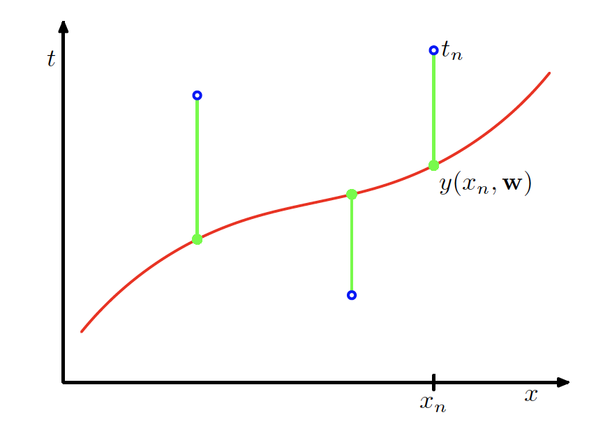
Model Selection
- Fit models with different polynomial orders:
- M = 0, 1, 3, 9
- Compare how model complexity affects the fit
Constant Model (M = 0)
\begin{aligned} f(x, \bm{w}) &= \sum_{m=0}^{M} w_m x^m \Big|_{M=0} \\ &= w_0 \end{aligned}
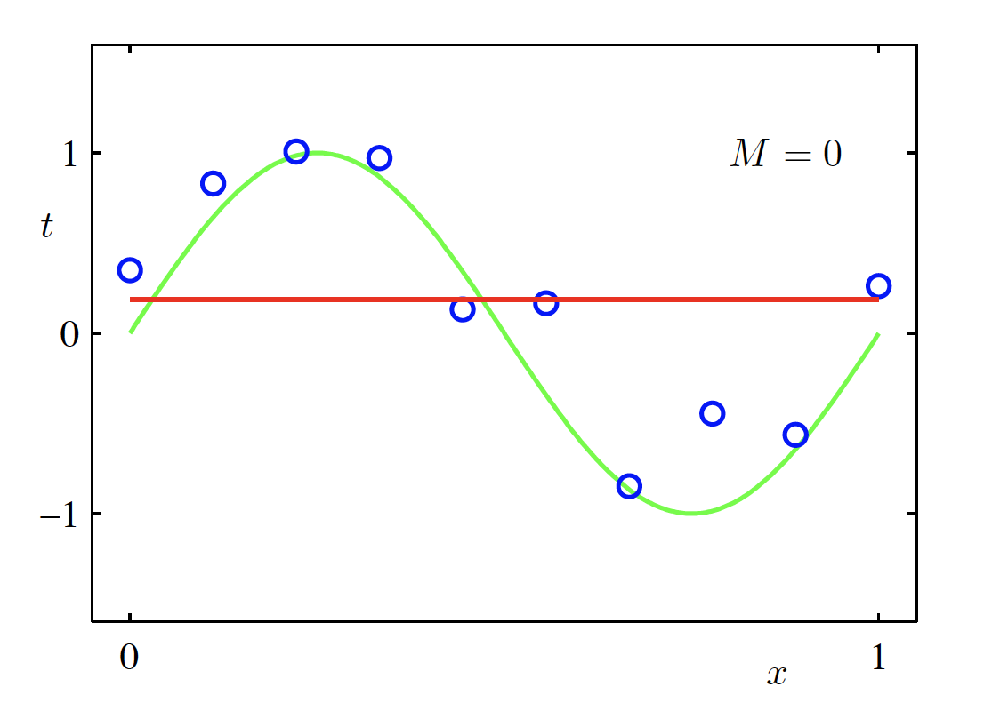
Linear Model (M = 1)
\begin{aligned} f(x, \bm{w}) &= \sum_{m=0}^{M} w_m x^m \Big|_{M=1} \\ &= w_0 + w_1 x \end{aligned}
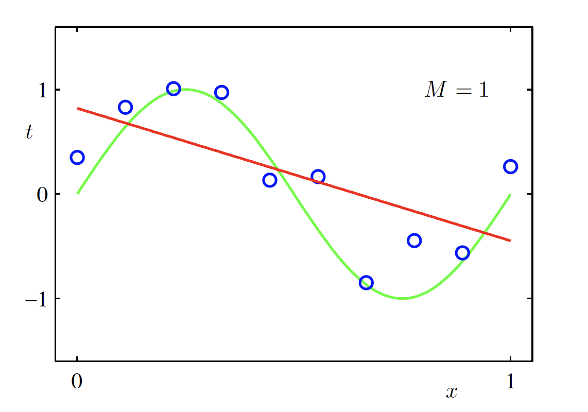
Cubic Polynomial Model (M = 3)
\begin{aligned} f(x, \bm{w}) &= \sum_{m=0}^{M} w_m x^m \Big|_{M=3} \\ &= w_0 + w_1 x + w_2 x^2 + w_3 x^3 \end{aligned}
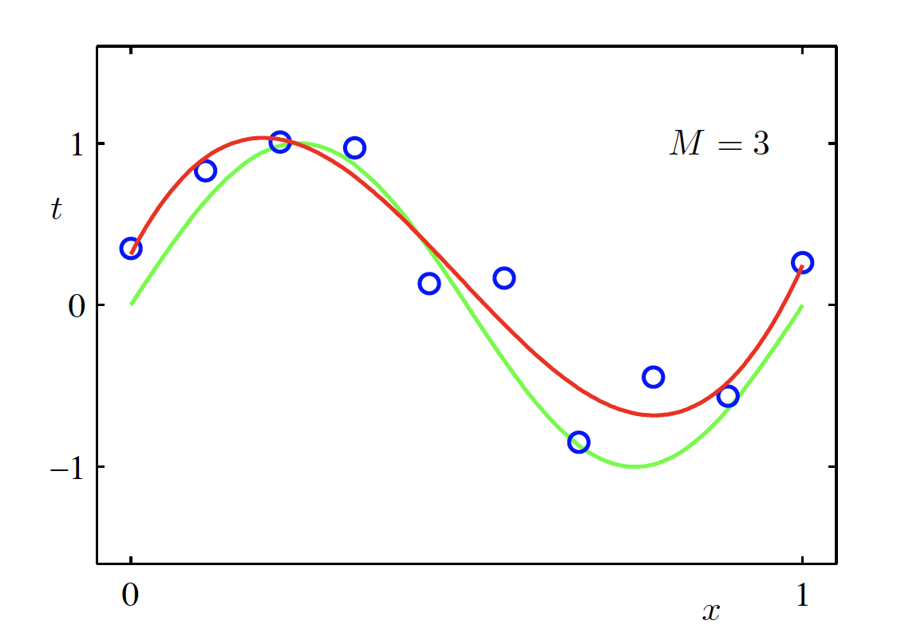
High-Degree Polynomial Model (M = 9)
\begin{aligned} f(x, \bm{w}) &= \sum_{m=0}^{M} w_m x^m \Big|_{M=9} \\ &= w_0 + w_1 x + \cdots + w_9 x^9 \end{aligned}
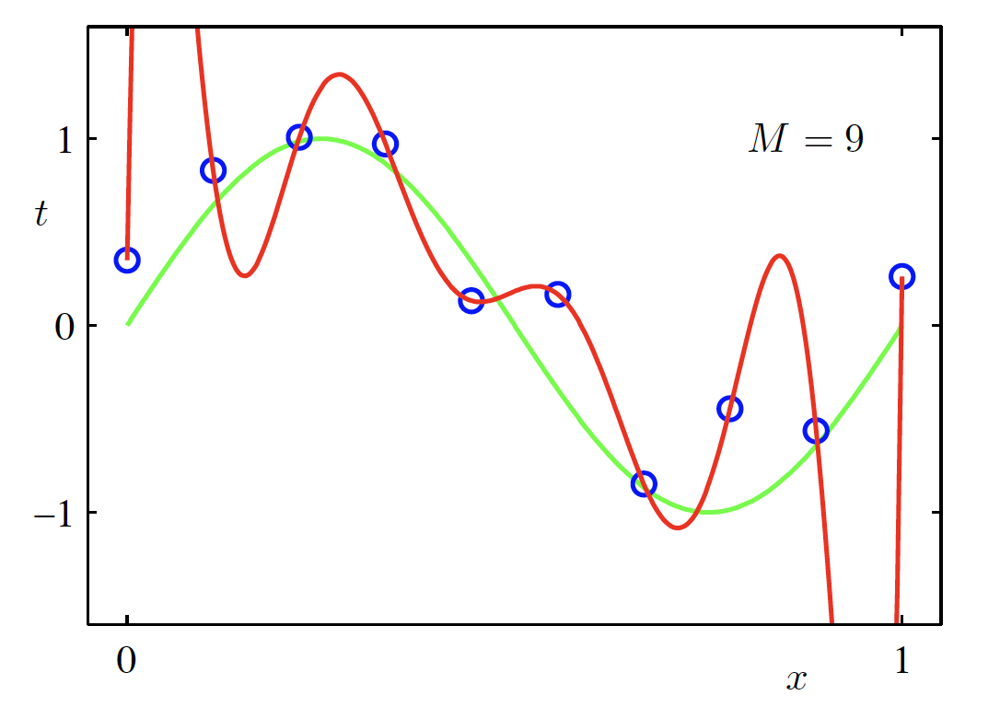
Testing the Fitted Model
- Train the model and obtain \bm w^*
- Generate 100 new observations as a test set
- Root-mean-square (RMS) error Err_{RMS}=\sqrt{2Err(\bm w^*)/N}
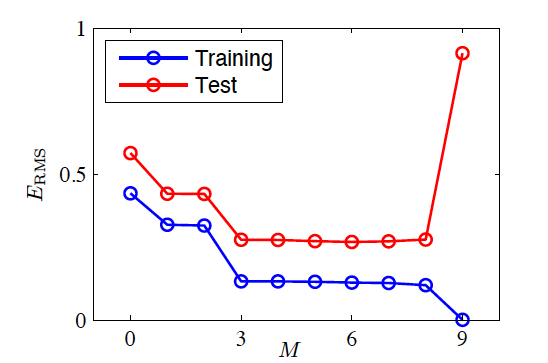
Parameters of the Fitted Model
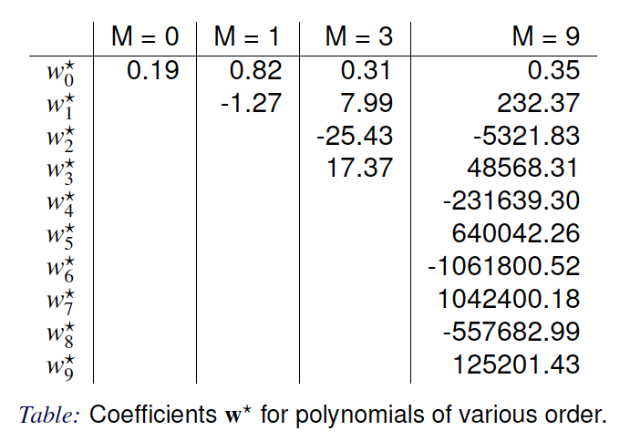
Effect of Training Data Size
- N=15, M=9
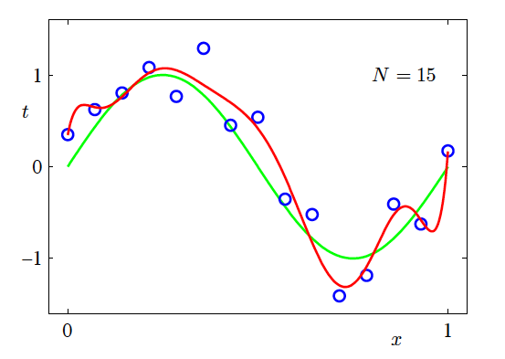
Increasing the Training Data Size
- N=100, M=9
- Increasing the size of the dataset reduces overfitting
- The number of data points should be no less than some multiple (say 5 or 10) of the number of parameters in the model
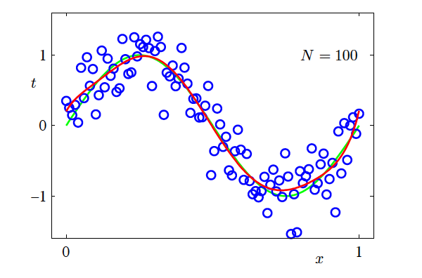
How?
- How can we control overfitting?
- How can we control model complexity?
Shrinkage Techniques
- Add a penalty (regularisation) term to the error function in order to control overfitting \tilde{\mathrm{Err}}(\bm{w}) = \mathrm{Err}_D(\bm{w}) + \lambda \,\mathrm{Err}_W(\bm{w})
- \lambda is the regularisation coefficient that controls the relative importance of the data-dependent error \mathrm{Err}_D(\bm{w}) and the regularisation term \mathrm{Err}_W(\bm{w})
- How do we choose \lambda?
Review: An Introduction to Statistical Learning (James et al. 2013), Chapter 6.2
Data Spliting and Cross Validation
- Split the data into training, validation and testing sets
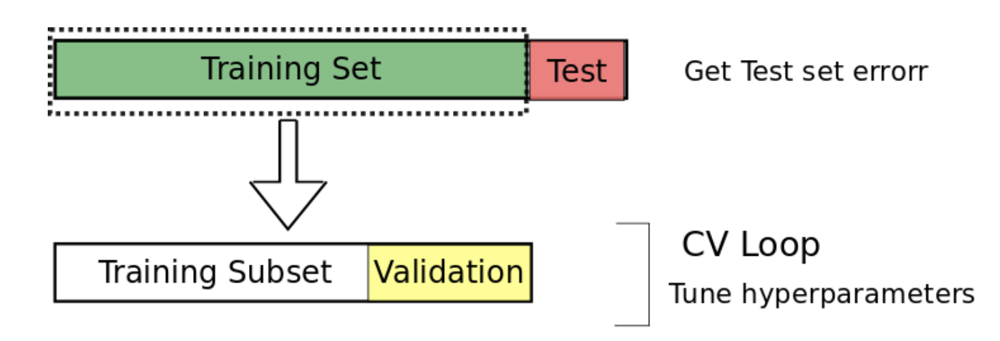
- Cross validation
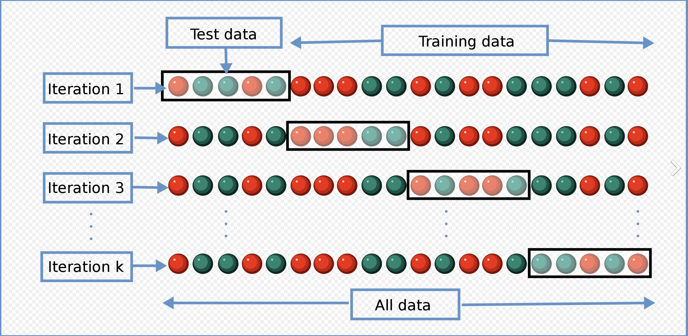
Review: An Introduction to Statistical Learning (James et al. 2013), Chapter 5.1
A general penalty/regulariser
Regularization term: \mathrm{Err}_W(\bm{w}) = \sum_{j=1}^{M} |w_j|^q = \lVert \bm{w} \rVert^q
The regularised error is \tilde{\mathrm{Err}}(\bm{w}) = \sum_{n=1}^{N} [f(x_n, \bm{w}) - t_n]^2 + \lambda \lVert \bm{w} \rVert^q
q=1: L1 regularisation (lasso)
q=2: L2 regularisation (ridge)
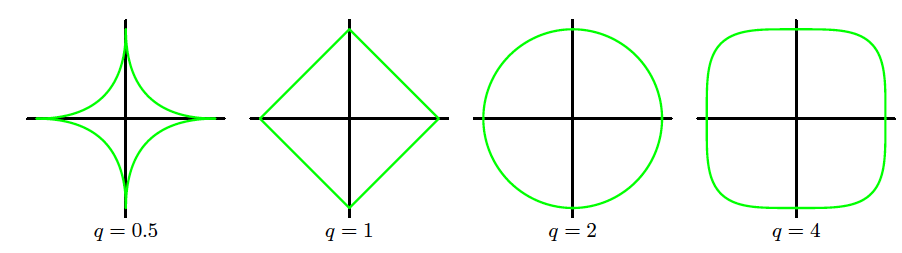
Geometric Comparison of Ridge and Lasso
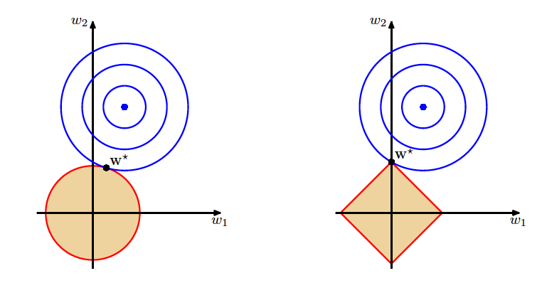
Modelling Example: Ridge (L2) Regularisation
Add the ridge regulariser to the error function to discourage the coefficients from reaching large values and control model complexity \tilde{\mathrm{Err}}(\bm{w}) = \sum_{n=1}^{N} [f(x_n, \bm{w}) - y_n]^2 + \lambda \lVert \bm{w} \rVert^2
Squared norm of the parameter vector \bm{w}: \lVert \bm{w} \rVert^2 = w_0^2 + w_1^2 + \cdots + w_M^2
\lambda governs the relative importance of the regularisation term compared with the sum-of-squares error term
- \ln \lambda = -\infty, \ln \lambda = -18, \ln \lambda = 0
Effect of Regularisation Strength
- M=9
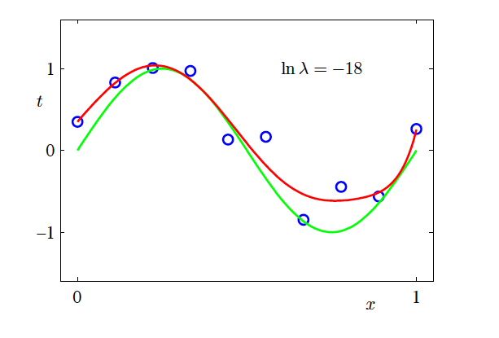
Effect of Regularisation Strength (continued)
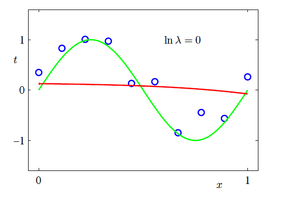
RMS Error vs Regularisation
- M=9
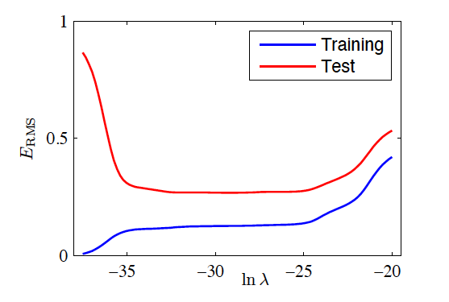
Shrinkage Techniques for Linear Models
Introduction
Let us begin by reviewing the simplest possible model:
- Sample size: n
- One observation (\bm{x}, y):
- Input feature vector \bm{x} = [x_0, x_1, x_2, \ldots, x_p]^T \in \mathbb{R}^{p+1}, where x_0 \equiv 1
- Output scalar y
- The model \bar{y} = \bm{\beta}^T \bm{x}
- \bm{\beta} is the parameter vector
- Training:
- We typically use the mean squared error (MSE): \mathrm{Err}(\bm{\beta}) = \frac{1}{n} \sum_{i=1}^{n} (y_i - \bm{\beta}^T \bm{x}_i)^2
- The estimator is obtained by: \hat{\bm{\beta}} = \underset{\bm{\beta}}{\operatorname{argmin}} \; \mathrm{Err}(\bm{\beta})
Computation
- Reformulate the loss,
Stack the input vectors row by row: \bm{X} = \begin{bmatrix} \bm{x}_1^T \\ \bm{x}_2^T \\ \vdots \\ \bm{x}_n^T \end{bmatrix} \in \mathbb{R}^{n \times (p+1)}, \quad \bm{y} = \begin{bmatrix} y_1 \\ y_2 \\ \vdots \\ y_n \end{bmatrix} \in \mathbb{R}^{n}
Rewrite the error: \mathrm{Err}(\bm{\beta}) = (\bm{y} - \bm{X}\bm{\beta})^T (\bm{y} - \bm{X}\bm{\beta})
Closed-form solution (normal equations): \hat{\bm{\beta}} = (\bm{X}^T \bm{X})^{-1} \bm{X}^T \bm{y}
- \bm{X}^T \bm{X} is called the Gram matrix
- In practice, matrix decomposition methods are used for numerical stability
- In R,
Pros and Cons
- Pros
- Simple (easy to understand, often generalises well)
- Fast
- Well-developed diagnostic tools and theoretical foundations
- Cons
- May be too simple for complex relationships
- Training can become unstable when collinearity is present
Too Simple: Linear Model Misspecification
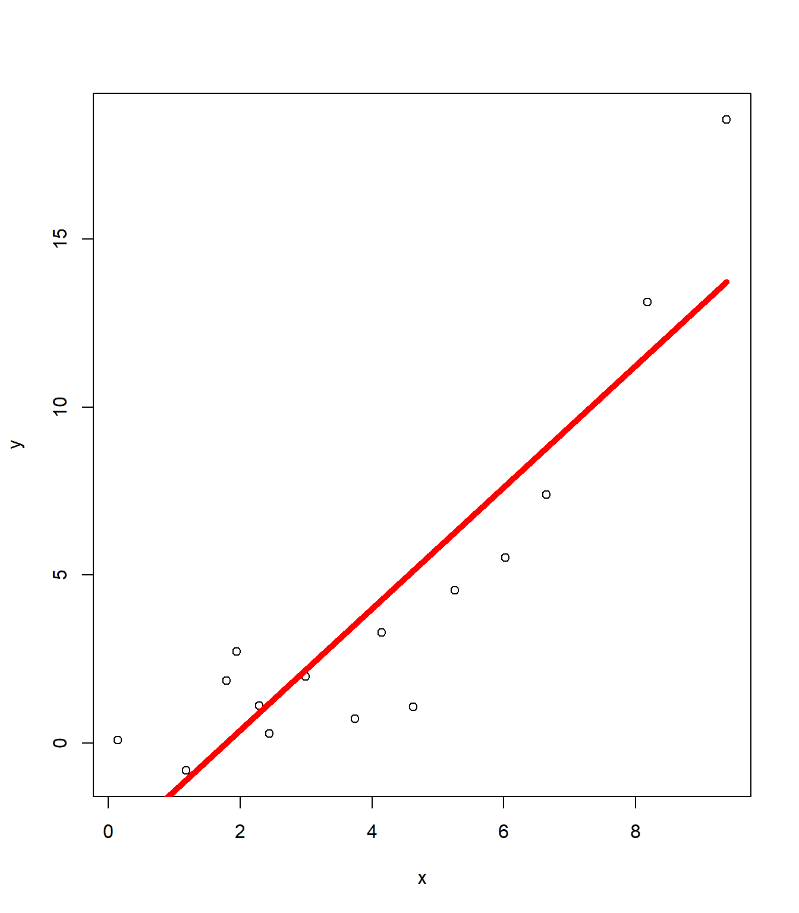
Feature extension
To extend linear regression, a simple approach is to expand the features using basis functions. For example:
- Polynomial: x \mapsto (x, x^2, x^3)
- Gaussian: x \mapsto \left(x, e^{-\frac{(x-\mu_1)^2}{2\sigma_1^2}}, e^{-\frac{(x-\mu_2)^2}{2\sigma_2^2}}\right)
- Trigonometric: x \mapsto (x, \sin x, \cos x)
- Linear basis function model:
f(x, \bm{\beta}) = \beta_0 + \sum_{j=1}^{M-1} \beta_j \phi_j(x)
- \phi_j(x) are known as basis functions
Using (x, x^2)
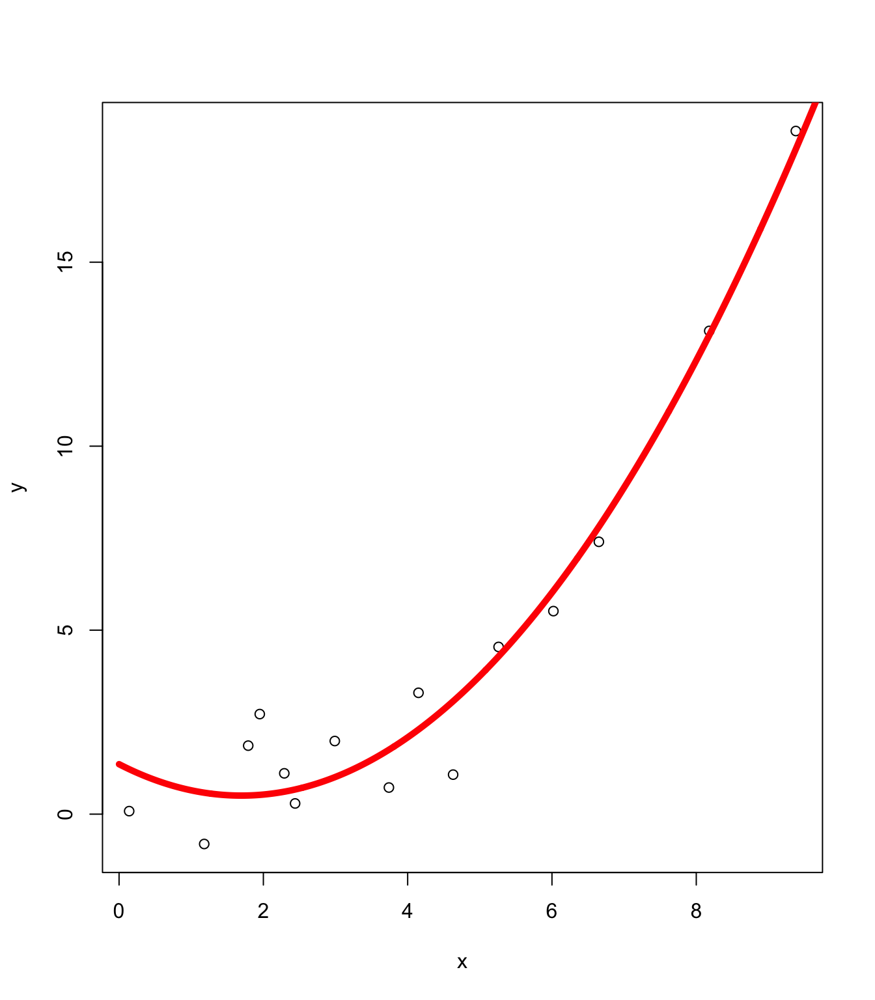
Overfitting
Sometimes, when the feature dimension is large relative to the number of observations, the model can overfit.
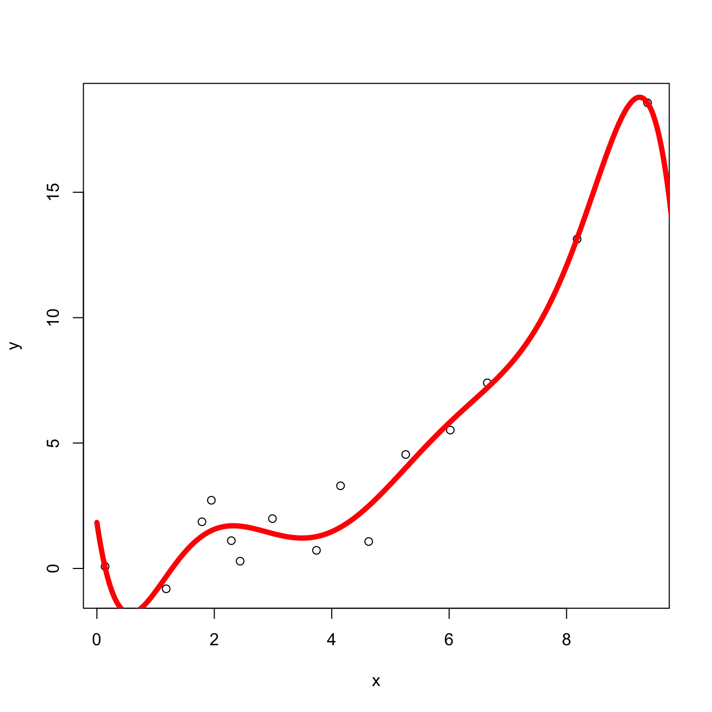
Shrinkage Techniques on Linear Basis Functions
The regularised error is: \tilde{\mathrm{Err}}(\bm{\beta}) = \sum_{n=1}^{N} \big[ f(\phi(x_n), \bm{\beta}) - y_n \big]^2 + \lambda \lVert \bm{\beta} \rVert^q
q=1: lasso (L1 regularisation)
q=2: ridge (L2 regularisation)
Bayesian Linear Regression
- Bayes’ theorem: \text{posterior} = \frac{\text{likelihood} \times \text{prior}}{\text{normalisation}} \quad p(\bm{\beta} \mid \bm{Y}, \bm{X}) = \frac{p(\bm{Y} \mid \bm{X}, \bm{\beta}) \, p(\bm{\beta})}{p(\bm{Y})}
- Aim: determine the posterior distribution of the parameters
- When the regression model has errors that follow a normal distribution, and if a particular form of prior distribution is assumed, explicit results are available for the posterior distributions of the model’s parameters.
Bayesian Interpretation of L1 and L2 Regularisers
- Assume a linear model with Gaussian errors
- Assume the coefficient vector \bm{\beta} has a prior distribution p(\bm{\beta})
- Assume
p(\bm{\beta}) = \prod_{j=1}^{p} g(\beta_j)
for some density function g
- The likelihood of the data is p(\bm{Y} \mid \bm{X}, \bm{\beta})
- The posterior distribution: p(\bm{\beta} \mid \bm{Y}, \bm{X}) \propto p(\bm{Y} \mid \bm{X}, \bm{\beta}) \, p(\bm{\beta})
Bayesian Interpretation of L_2 (Ridge) Penalty
- The prior distribution g is Gaussian with mean zero and standard deviation that depends on \lambda
- The posterior mode (the most likely value) of \bm{\beta} is the ridge regression solution
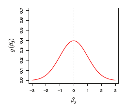
Bayesian Interpretation of L_1 (Lasso) Penalty
- The prior distribution g is a double-exponential (Laplace) distribution with mean zero and scale parameter that depends on \lambda
- The posterior mode of \bm{\beta} is the lasso solution
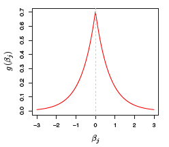
The Limitations of LASSO
- If the number of predictors (p) exceeds the number of samples (n), the lasso selects at most n variables
- The number of selected variables is bounded by the sample size
- Example: Leukemia Data, Golub et al. Science 1999
- 38 training samples, 34 test samples, and p = 7129 genes
- Grouped variables: the lasso fails to perform grouped selection
- It tends to select one variable from a group and ignore the others
- Example: For genes that share the same biological “pathway”, the correlations among them can be high. We think of these genes as forming a group
Source: adapted from Zou and Hastie (2004)
Elastic Net
\hat{\bm{\beta}} = \arg\min_{\bm{\beta}} \; \lVert \bm{y} - \bm{X}\bm{\beta} \rVert^2 + \lambda_2 \lVert \bm{\beta} \rVert^2 + \lambda_1 \lVert \bm{\beta} \rVert_1
- The L_1 penalty induces sparsity
- The L_2 penalty:
- Removes the limitation on the number of selected variables;
- Encourages the grouping effect
- Stabilizes the l_1 regularization path.
Source: adapted from Zou and Hastie (2005)
Geometry of the Elastic Net
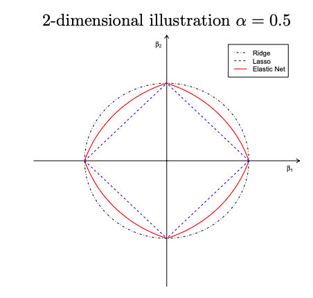
The elastic net penalty J(\bm{\beta}) = \alpha \lVert \bm{\beta} \rVert^2 + (1 - \alpha)\lVert \bm{\beta} \rVert_1 where \alpha = \frac{\lambda_2}{\lambda_2 + \lambda_1} - Singularities at the vertexes (necessary for sparsity) - Strict convex edges; the strength of convexity varies with \alpha (grouping effect)
Shrinkage Techniques on Generalised Linear Models (GLM)
Regularised GLM
- Linear regression
- Logistic regression
- Binomial
- Multinomial
- Poisson regression
- Cox proportional hazards model
Shrinkage Techniques on Other Models
Other Shrinkage Applications
- Sparse PCA
- Regularised Clustering
- Regularised Random Forest
- Regularised Neural Network
Using R
Regularised Regression in R
- Ridge, lasso, and elastic net:
glmnet,cv.glmnet(package:glmnet)- See also: Introduction to glmnet
- Ridge regression (alternative):
lm.ridge(package:MASS)
- Lasso (alternative):
lars,cv.lars(package:lars)
- Penalised regression with cross-validation (alternative):
penalized(package:penalized)
Feature Selection
Considerations for Feature Selection
- Domain knowledge
- Prediction accuracy vs interpretability
- Nuisance variables
- Information leakage
- e.g. performing feature selection using the full dataset before cross-validation
- Variable interactions
- Highly correlated variables (multicolinearity)
- Linear models: unstable or highly variable estimates
- Random forests: mask interactions between features
- Simpler models are often more interpretable
Reasons for Feature Selection
“Sometimes less is better.”
- It can enable faster training
- It reduces model complexity and improves interpretability
- It can improve predictive accuracy if an appropriate subset is selected
- It helps reduce overfitting
Feature Selection Methods
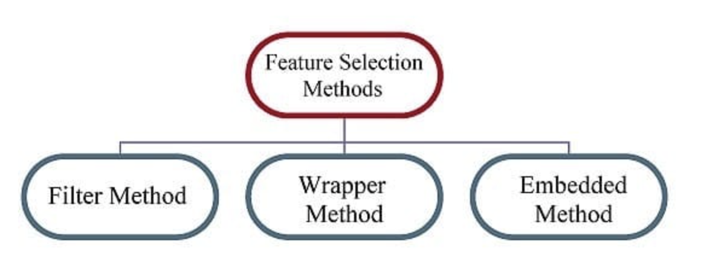
Filter Methods
- Used as a data preprocessing step
- Features are selected based on statistical measures of their relationship with the target (response) variable
- Filter methods do not address multicolinearity.
| Feature\Response | Continuous | Categorical |
|---|---|---|
| Continuous | Pearson’s Correlation | LDA |
| Categorical | ANOVA | Chi-square test |
Wrapper Methods
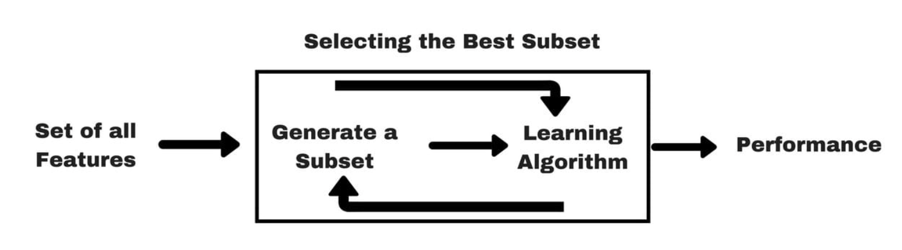
- Identify subsets of features by training and evaluating a model
- This is a search problem and can be computationally expensive.
Wrapper Methods Examples
- Best subset selection (2^p models)
- Stepwise selection
- Forward stepwise selection (1+p(p+1)/2 models)
- Backward stepwise elimination (1+p(p+1)/2 models)
- Hybrid approaches
Review: An Introduction to Statistical Learning (James et al. 2013), Chapters 6.1, 6.5
Embedded Methods
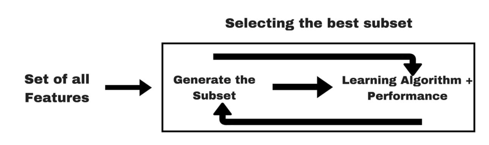
- Feature selection is built into the model training process
- Example: lasso regression
Dimension Reduction
- Transform predictors to reduce the dimensionality of the problem
- Purposes?
- Methods:
- PCA
- PCR
- PLS
- Compare their advantages and disadvantages
Review: An Introduction to Statistical Learning (James et al. 2013), Sections 6.3, 10.2
References
Analytics Vidhya. 2016. “Introduction to Feature Selection Methods with an Example.” https://www.analyticsvidhya.com/blog/2016/12/introduction-to-feature-selection-methods-with-an-example-or-how-to-select-the-right-variables/.
Bishop, Christopher M, and Nasser M Nasrabadi. 2006. Pattern Recognition and Machine Learning. Vol. 4. 4. Springer.
Cochrane, Courtney. 2018. “Time Series Nested Cross-Validation.” May 2018. https://medium.com/data-science/time-series-nested-cross-validation-76adba623eb9.
Deng, Houtao, and George Runger. 2013. “Gene Selection with Guided Regularized Random Forest.” Pattern Recognition 46 (12): 3483–89.
James, Gareth, Daniela Witten, Trevor Hastie, Robert Tibshirani, et al. 2013. An Introduction to Statistical Learning: With Applications in r. Vol. 103. Springer.
Mc Loone, Seán, and George Irwin. 2001. “Improving Neural Network Training Solutions Using Regularisation.” Neurocomputing 37 (1-4): 71–90.
Sun, Wei, Junhui Wang, and Yixin Fang. 2012. “Regularized k-Means Clustering of High-Dimensional Data and Its Asymptotic Consistency.”
Wikimedia Commons contributors. 2016. “K-Fold Cross Validation (English).” 2016. https://commons.wikimedia.org/wiki/File:K-fold_cross_validation_EN.jpg.
{kind=link}
Zou, Hui, and Trevor Hastie. 2004. “Regularization and Variable Selection via the Elastic Net.” 2004. https://web.stanford.edu/~hastie/TALKS/enet_talk.pdf.
———. 2005. “Regularization and Variable Selection via the Elastic Net.” Journal of the Royal Statistical Society Series B: Statistical Methodology 67 (2): 301–20.
Zou, Hui, Trevor Hastie, and Robert Tibshirani. 2006. “Sparse Principal Component Analysis.” Journal of Computational and Graphical Statistics 15 (2): 265–86.